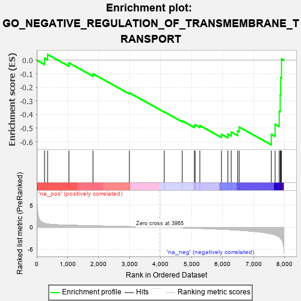
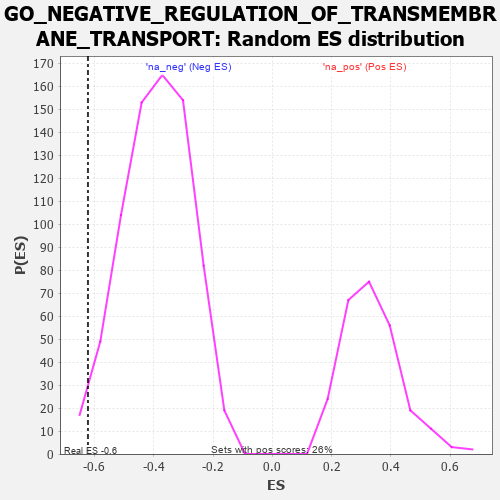

| | | Dataset | 7d |
| Phenotype | NoPhenotypeAvailable |
| Upregulated in class | na_neg |
| GeneSet | GO_NEGATIVE_REGULATION_OF_TRANSMEMBRANE_TRANSPORT |
| Enrichment Score (ES) | -0.6220005 |
| Normalized Enrichment Score (NES) | -1.593717 |
| Nominal p-value | 0.01615074 |
| FDR q-value | 0.10003107 |
| FWER p-Value | 1.0 |
Table: GSEA Results Summary

Fig 1: Enrichment plot: GO_NEGATIVE_REGULATION_OF_TRANSMEMBRANE_TRANSPORT
Profile of the Running ES Score & Positions of GeneSet Members on the Rank Ordered List
| PROBE | GENE SYMBOL | GENE_TITLE | RANK IN GENE LIST | RANK METRIC SCORE | RUNNING ES | CORE ENRICHMENT | | 1 | THADA | | | 253 | 0.931 | 0.0160 | No |
| 2 | GSK3A | | | 351 | 0.745 | 0.0420 | No |
| 3 | AKT1 | | | 1040 | 0.476 | -0.0201 | No |
| 4 | FMR1 | | | 1816 | 0.334 | -0.1005 | No |
| 5 | ISCU | | | 2989 | 0.151 | -0.2401 | No |
| 6 | MTOR | | | 4114 | -0.025 | -0.3802 | No |
| 7 | CRBN | | | 4695 | -0.138 | -0.4461 | No |
| 8 | DRD2 | | | 5088 | -0.221 | -0.4840 | No |
| 9 | MMP9 | | | 5108 | -0.227 | -0.4747 | No |
| 10 | PTEN | | | 5262 | -0.261 | -0.4806 | No |
| 11 | ACTN2 | | | 5960 | -0.458 | -0.5447 | No |
| 12 | GOPC | | | 6167 | -0.528 | -0.5435 | No |
| 13 | STK39 | | | 6274 | -0.563 | -0.5280 | No |
| 14 | DYSF | | | 6481 | -0.654 | -0.5204 | No |
| 15 | REM1 | | | 6530 | -0.676 | -0.4917 | No |
| 16 | CALM1 | | | 7567 | -1.499 | -0.5451 | Yes |
| 17 | ANK3 | | | 7690 | -1.740 | -0.4711 | Yes |
| 18 | PKD2 | | | 7822 | -2.167 | -0.3764 | Yes |
| 19 | TCAF2 | | | 7854 | -2.428 | -0.2557 | Yes |
| 20 | CALM3 | | | 7869 | -2.525 | -0.1279 | Yes |
| 21 | CAV3 | | | 7896 | -2.739 | 0.0094 | Yes |
Table: GSEA details [plain text format]

Fig 2: GO_NEGATIVE_REGULATION_OF_TRANSMEMBRANE_TRANSPORT: Random ES distribution
Gene set null distribution of ES for GO_NEGATIVE_REGULATION_OF_TRANSMEMBRANE_TRANSPORT